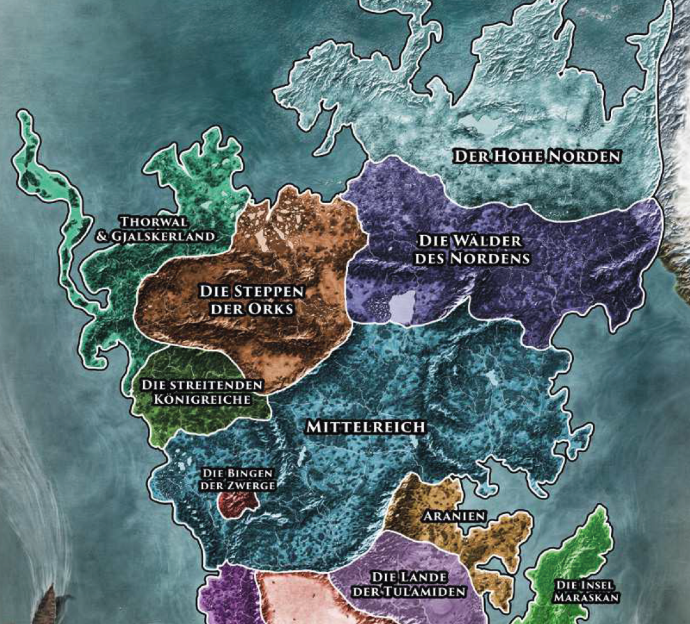

Zahlreiche Gebirge Aventuriens dienen den Zwergen als Heimat. Diese sind in verschiedenen Bergkönigreichen organisiert, die unabhängig von den menschlichen Reichen regiert werden.
In tiefen Höhlenstädten, von denen Xorlosch die älteste ist, unter den Koschbergen, den Ingrakuppen, dem Phecanowald und dem Eisenwald, leben die konservativen Erzzwerge, das älteste und größte Zwergenvolk. Die für ihren Durst, ihre Rauflust, Waffen- und Schmiedekunst bekannten Ambosszwerge siedeln vornehmlich im namensgebenden Ambossgebirge und den Thaschbergen, vereinzelte Sippen findet man auch in den Khunchomer Bergen und im östlichen Raschtulswall. Hauptsächlich in den Hügellanden rund um den Angbarer See im Kosch sowie in vielen Gebieten des Mittelreichs leben die geselligen Hügelzwerge. Die abenteuerlustigen Brillantzwerge, die bis zur Borbaradianischen Invasion in den Beilunker Bergen wohnten, haben eine neue Heimat im Raschtulswall gefunden. Die letztgenannten beiden Zwergvölker pflegen sehr gute Kontakte zu den Menschen. In einigen Höhlen und Stollen der Gebirge des Orklands und des Mittelreichs leben die Tiefzwerge, degenerierte Nachkommen der Zwerge von Umrazim, einer lange verschollenen Binge. Im äußersten Nordosten Aventuriens siedeln die Wilden Zwerge, deren Herkunft in der allerfrühesten zwergischen Historie verborgen ist. Außerhalb der Bergkönigreiche leben viele Zwerge in den Städten der Menschen, wo sie als Handwerker und Händler hohes Ansehen genießen.